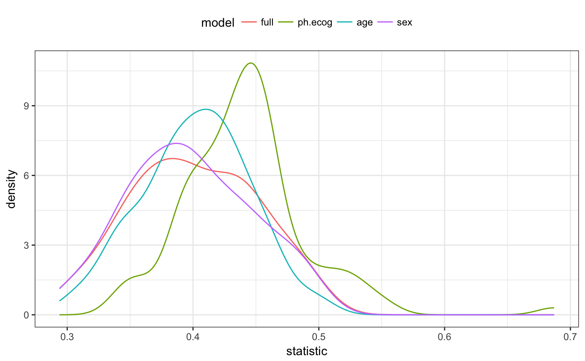
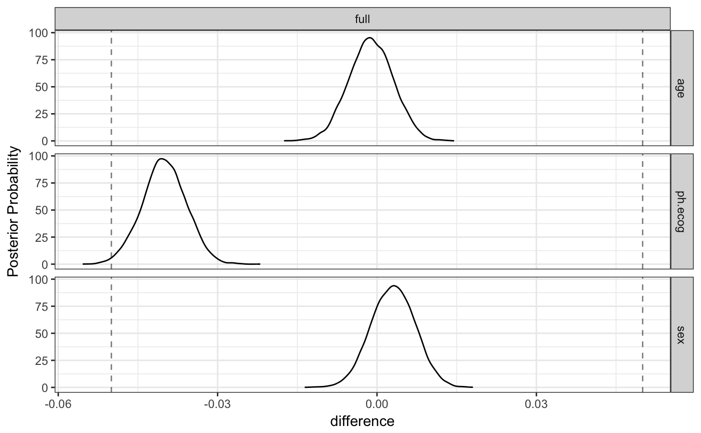

Survival Analysis Example
Source:vignettes/Applications/Survival_Analysis.Rmd
Survival_Analysis.RmdIn this article, a parametric analysis of censored data is conducted and rsample is used to measure the importance of predictors in the model. The data that will be used is the NCCTG lung cancer data contained in the survival package:
## 'data.frame': 228 obs. of 10 variables:
## $ inst : num 3 3 3 5 1 12 7 11 1 7 ...
## $ time : num 306 455 1010 210 883 ...
## $ status : num 2 2 1 2 2 1 2 2 2 2 ...
## $ age : num 74 68 56 57 60 74 68 71 53 61 ...
## $ sex : num 1 1 1 1 1 1 2 2 1 1 ...
## $ ph.ecog : num 1 0 0 1 0 1 2 2 1 2 ...
## $ ph.karno : num 90 90 90 90 100 50 70 60 70 70 ...
## $ pat.karno: num 100 90 90 60 90 80 60 80 80 70 ...
## $ meal.cal : num 1175 1225 NA 1150 NA ...
## $ wt.loss : num NA 15 15 11 0 0 10 1 16 34 ...status is an indicator for which patients are censored (status = 1) or an actual event (status = 2). The help file ?survreg has the following model fit:
lung_mod <- survreg(Surv(time, status) ~ ph.ecog + age + strata(sex), data = lung) summary(lung_mod)
##
## Call:
## survreg(formula = Surv(time, status) ~ ph.ecog + age + strata(sex),
## data = lung)
## Value Std. Error z p
## (Intercept) 6.73235 0.42396 15.88 < 2e-16
## ph.ecog -0.32443 0.08649 -3.75 0.00018
## age -0.00581 0.00693 -0.84 0.40193
## sex=1 -0.24408 0.07920 -3.08 0.00206
## sex=2 -0.42345 0.10669 -3.97 7.2e-05
##
## Scale:
## sex=1 sex=2
## 0.783 0.655
##
## Weibull distribution
## Loglik(model)= -1137 Loglik(intercept only)= -1146
## Chisq= 17.8 on 2 degrees of freedom, p= 0.00014
## Number of Newton-Raphson Iterations: 5
## n=227 (1 observation deleted due to missingness)Note that the stratification on gender only affects the scale parameter; the estimates above are from a log-linear model for the scale parameter even though they are listed with the regression variables for the other parameter. coef gives results that are more clear:
coef(lung_mod)
## (Intercept) ph.ecog age
## 6.73235 -0.32443 -0.00581To resample these data, it would be a good idea to try to maintain the same censoring rate across the splits. To do this, stratified resampling can be used where each analysis/assessment split is conducted within each value of the status indicator. To demonstrate, Monte Carlo resampling is used where 75% of the data are in the analysis set. A total of 100 splits are created.
library(rsample) set.seed(9666) mc_samp <- mc_cv(lung, strata = "status", times = 100) library(purrr) cens_rate <- function(x) mean(analysis(x)$status == 1) summary(map_dbl(mc_samp$splits, cens_rate))
## Min. 1st Qu. Median Mean 3rd Qu. Max.
## 0.279 0.279 0.279 0.279 0.279 0.279To demonstrate the use of resampling with censored data, the parametric model shown above will be fit with different variable sets to characterize how important each predictor is to the outcome.
To do this, a set of formulas are created for the different variable sets:
three_fact <- as.formula(Surv(time, status) ~ ph.ecog + age + strata(sex)) rm_ph.ecog <- as.formula(Surv(time, status) ~ age + strata(sex)) rm_age <- as.formula(Surv(time, status) ~ ph.ecog + strata(sex)) rm_sex <- as.formula(Surv(time, status) ~ ph.ecog + age )
The model fitting function will take the formula as an argument:
To calculate the efficacy of the model, the concordance statistic is used (see ?survConcordance):
get_concord <- function(split, mod, ...) { pred_dat <- assessment(split) pred_dat$pred <- predict(mod, newdata = pred_dat) concordance(Surv(time, status) ~ pred, pred_dat, ...)$concordance }
With these functions, a series of models are created for each variable set.
mc_samp$mod_full <- map(mc_samp$splits, mod_fit, form = three_fact) mc_samp$mod_ph.ecog <- map(mc_samp$splits, mod_fit, form = rm_ph.ecog) mc_samp$mod_age <- map(mc_samp$splits, mod_fit, form = rm_age) mc_samp$mod_sex <- map(mc_samp$splits, mod_fit, form = rm_sex)
Similarly, the concordance values are computed for each model:
mc_samp$full <- map2_dbl(mc_samp$splits, mc_samp$mod_full, get_concord) mc_samp$ph.ecog <- map2_dbl(mc_samp$splits, mc_samp$mod_ph.ecog, get_concord) mc_samp$age <- map2_dbl(mc_samp$splits, mc_samp$mod_age, get_concord) mc_samp$sex <- map2_dbl(mc_samp$splits, mc_samp$mod_sex, get_concord)
The distributions of the resampling estimates
library(dplyr) concord_est <- mc_samp %>% dplyr::select(-matches("^mod")) library(tidyr) library(ggplot2) concord_est %>% gather() %>% ggplot(aes(x = statistic, col = model)) + geom_line(stat = "density") + theme_bw() + theme(legend.position = "top")

It looks as though the model missing ph.ecog has larger concordance values than the other models. As one might expect, the full model and the model absent sex are very similar; the difference in these models should only be the scale parameters estimates.
To more formally test this, the tidyposterior package is used to create a Bayesian model for the concordance statistics.
##
## SAMPLING FOR MODEL 'continuous' NOW (CHAIN 1).
## Chain 1:
## Chain 1: Gradient evaluation took 0.000125 seconds
## Chain 1: 1000 transitions using 10 leapfrog steps per transition would take 1.25 seconds.
## Chain 1: Adjust your expectations accordingly!
## Chain 1:
## Chain 1:
## Chain 1: Iteration: 1 / 5000 [ 0%] (Warmup)
## Chain 1: Iteration: 500 / 5000 [ 10%] (Warmup)
## Chain 1: Iteration: 1000 / 5000 [ 20%] (Warmup)
## Chain 1: Iteration: 1500 / 5000 [ 30%] (Warmup)
## Chain 1: Iteration: 2000 / 5000 [ 40%] (Warmup)
## Chain 1: Iteration: 2500 / 5000 [ 50%] (Warmup)
## Chain 1: Iteration: 2501 / 5000 [ 50%] (Sampling)
## Chain 1: Iteration: 3000 / 5000 [ 60%] (Sampling)
## Chain 1: Iteration: 3500 / 5000 [ 70%] (Sampling)
## Chain 1: Iteration: 4000 / 5000 [ 80%] (Sampling)
## Chain 1: Iteration: 4500 / 5000 [ 90%] (Sampling)
## Chain 1: Iteration: 5000 / 5000 [100%] (Sampling)
## Chain 1:
## Chain 1: Elapsed Time: 5.25932 seconds (Warm-up)
## Chain 1: 1.90229 seconds (Sampling)
## Chain 1: 7.16162 seconds (Total)
## Chain 1:
##
## SAMPLING FOR MODEL 'continuous' NOW (CHAIN 2).
## Chain 2:
## Chain 2: Gradient evaluation took 4.1e-05 seconds
## Chain 2: 1000 transitions using 10 leapfrog steps per transition would take 0.41 seconds.
## Chain 2: Adjust your expectations accordingly!
## Chain 2:
## Chain 2:
## Chain 2: Iteration: 1 / 5000 [ 0%] (Warmup)
## Chain 2: Iteration: 500 / 5000 [ 10%] (Warmup)
## Chain 2: Iteration: 1000 / 5000 [ 20%] (Warmup)
## Chain 2: Iteration: 1500 / 5000 [ 30%] (Warmup)
## Chain 2: Iteration: 2000 / 5000 [ 40%] (Warmup)
## Chain 2: Iteration: 2500 / 5000 [ 50%] (Warmup)
## Chain 2: Iteration: 2501 / 5000 [ 50%] (Sampling)
## Chain 2: Iteration: 3000 / 5000 [ 60%] (Sampling)
## Chain 2: Iteration: 3500 / 5000 [ 70%] (Sampling)
## Chain 2: Iteration: 4000 / 5000 [ 80%] (Sampling)
## Chain 2: Iteration: 4500 / 5000 [ 90%] (Sampling)
## Chain 2: Iteration: 5000 / 5000 [100%] (Sampling)
## Chain 2:
## Chain 2: Elapsed Time: 5.74887 seconds (Warm-up)
## Chain 2: 1.40222 seconds (Sampling)
## Chain 2: 7.15108 seconds (Total)
## Chain 2:
##
## SAMPLING FOR MODEL 'continuous' NOW (CHAIN 3).
## Chain 3:
## Chain 3: Gradient evaluation took 3.4e-05 seconds
## Chain 3: 1000 transitions using 10 leapfrog steps per transition would take 0.34 seconds.
## Chain 3: Adjust your expectations accordingly!
## Chain 3:
## Chain 3:
## Chain 3: Iteration: 1 / 5000 [ 0%] (Warmup)
## Chain 3: Iteration: 500 / 5000 [ 10%] (Warmup)
## Chain 3: Iteration: 1000 / 5000 [ 20%] (Warmup)
## Chain 3: Iteration: 1500 / 5000 [ 30%] (Warmup)
## Chain 3: Iteration: 2000 / 5000 [ 40%] (Warmup)
## Chain 3: Iteration: 2500 / 5000 [ 50%] (Warmup)
## Chain 3: Iteration: 2501 / 5000 [ 50%] (Sampling)
## Chain 3: Iteration: 3000 / 5000 [ 60%] (Sampling)
## Chain 3: Iteration: 3500 / 5000 [ 70%] (Sampling)
## Chain 3: Iteration: 4000 / 5000 [ 80%] (Sampling)
## Chain 3: Iteration: 4500 / 5000 [ 90%] (Sampling)
## Chain 3: Iteration: 5000 / 5000 [100%] (Sampling)
## Chain 3:
## Chain 3: Elapsed Time: 5.48606 seconds (Warm-up)
## Chain 3: 1.21586 seconds (Sampling)
## Chain 3: 6.70192 seconds (Total)
## Chain 3:
##
## SAMPLING FOR MODEL 'continuous' NOW (CHAIN 4).
## Chain 4:
## Chain 4: Gradient evaluation took 3.4e-05 seconds
## Chain 4: 1000 transitions using 10 leapfrog steps per transition would take 0.34 seconds.
## Chain 4: Adjust your expectations accordingly!
## Chain 4:
## Chain 4:
## Chain 4: Iteration: 1 / 5000 [ 0%] (Warmup)
## Chain 4: Iteration: 500 / 5000 [ 10%] (Warmup)
## Chain 4: Iteration: 1000 / 5000 [ 20%] (Warmup)
## Chain 4: Iteration: 1500 / 5000 [ 30%] (Warmup)
## Chain 4: Iteration: 2000 / 5000 [ 40%] (Warmup)
## Chain 4: Iteration: 2500 / 5000 [ 50%] (Warmup)
## Chain 4: Iteration: 2501 / 5000 [ 50%] (Sampling)
## Chain 4: Iteration: 3000 / 5000 [ 60%] (Sampling)
## Chain 4: Iteration: 3500 / 5000 [ 70%] (Sampling)
## Chain 4: Iteration: 4000 / 5000 [ 80%] (Sampling)
## Chain 4: Iteration: 4500 / 5000 [ 90%] (Sampling)
## Chain 4: Iteration: 5000 / 5000 [100%] (Sampling)
## Chain 4:
## Chain 4: Elapsed Time: 5.91993 seconds (Warm-up)
## Chain 4: 1.12366 seconds (Sampling)
## Chain 4: 7.04359 seconds (Total)
## Chain 4:concord_est$stan
## stan_glmer
## family: gaussian [identity]
## formula: statistic ~ model + (1 | id)
## observations: 400
## ------
## Median MAD_SD
## (Intercept) 0.6 0.0
## modelph.ecog -0.1 0.0
## modelage 0.0 0.0
## modelsex 0.0 0.0
##
## Auxiliary parameter(s):
## Median MAD_SD
## sigma 0.0 0.0
##
## Error terms:
## Groups Name Std.Dev.
## id (Intercept) 0.033
## Residual 0.030
## Num. levels: id 100
##
## ------
## * For help interpreting the printed output see ?print.stanreg
## * For info on the priors used see ?prior_summary.stanregTo summarize the posteriors for each model:
## Warning: `ggplot.posterior()` is deprecated as of tidyposterior 0.1.0.
## This warning is displayed once every 8 hours.
## Call `lifecycle::last_warnings()` to see where this warning was generated.
While this seems clear-cut, let’s assume that a difference in the concordance statistic of 0.1 is a real effect. To compute the posteriors for the difference in models, the full model will be contrasted with the others:
comparisons <- contrast_models( concord_est, list_1 = rep("full", 3), list_2 = c("ph.ecog", "age", "sex"), seed = 4654 )
The posterior distributions show that, statistically, ph.ecog has real importance ot the model. However, since these distributions are mostly with +/- 0.05, they are unlikely to be real differences.
## Warning: `ggplot.posterior_diff()` is deprecated as of tidyposterior 0.1.0.
## This warning is displayed once every 8 hours.
## Call `lifecycle::last_warnings()` to see where this warning was generated.
The ROPE statistics quantify the practical effects:
summary(comparisons, size = 0.05) %>% dplyr::select(contrast, starts_with("pract"))
## # A tibble: 3 x 4
## contrast pract_neg pract_equiv pract_pos
## <chr> <dbl> <dbl> <dbl>
## 1 full vs age 0 1 0
## 2 full vs ph.ecog 0 0.281 0.719
## 3 full vs sex 0 1 0